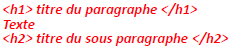
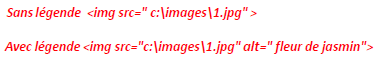
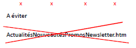
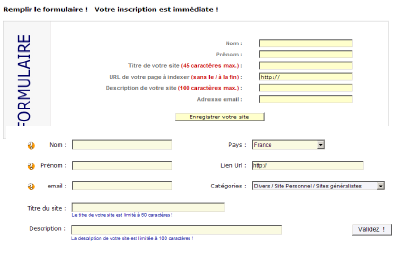

• Les titres et les sous-titres XHTML sont très importants pour le référencement. Les moteurs de recherches
donnent de l’importance aux titres car ils donnent une idée sur le contenu des paragraphes.

Conseils généraux pour les balises méta
• Les balises doivent figurer dans toutes les pages
• Les balises doivent être différentes dans chaque page
• Les balises doivent être concises
• Les balises doivent résumer le contenu de chaque page
• Pour la page d’accueil faire une description décrivant tout le site
• Elle ne doit pas faire plus de 250 caractères
• Créer un résumé avec des phrases et éviter les fautes de frappe et d’orthographes
• Créer une description la plus objective possible
• Pour une bonne efficacité ne pas mettre plus que 10 mots/page
• Il recommandé les termes simples et les plus précis possibles
• Les images sont des illustrations du texte et nécessitent donc des légendes.
• Ces légendes sont prises en considération par les moteurs de recherche, il convient donc de les utiliser pour toutes les images et de choisir à chaque fois la
bonne légende (précise et concise).

• Les noms des pages sont aussi importants pour le référencement des page web.
• Le nom de la page doit refléter son contenu
• Exemple de la page web Tunisiana Actualités, Nouveautés et Promos, Newsletter.htm

• L’URL du site Web aide remarquablement au positionnement de celui-ci par rapport aux mots-clé qu’il contient. Il faut donc penser
aussi à choisir un nom de domaine pertinent et en rapport avec le contenu du site.
• Le texte est l’élément le plus important d’une page Web car c’est lui le porteur par excellence de l’information. Certains moteurs de recherche exigent la présence d’un nombre
minimal de caractères 250 environ suivant le moteur.
• Les textes les mieux pris en compte par les outils de recherches sont ceux placés prés de la balise (body)
• Les moteurs de recherche évaluent aussi les mots mis en gras et les prennent en compte.
• Les moteurs de recherche peuvent distinguer les liens hypertexte (internes ou externes) présent dans la page.
• Il y en a même qui les considèrent comme des mots-clé relatifs à la page courante ou encore relatifs à la page destination.
Les techniques de référencement automatiques
• Les annuaires indexent les sites et non les pages.
• L’inscription dans un annuaire se fait par soimême à travers un formulaire.
• La soumission sera ensuite vérifiée manuellement par un documentaliste de l’annuaire qui vérifie toutes les informations et la pertinence du site
par apport aux critères.
• La soumission doit être parfaite sinon le site sera
rejeté.

• Comment envoyer de bonnes soumissions ?
• Certain annuaires refusent que l’on place des phrases ou des mots clés dans le titre du site
• Il faut mettre le vrai titre du site
• Pour la description, utiliser la même description que celle utilisée dans la balise « meta description »
• Eviter de mettre dans la description :
– Du texte de nature commerciale
– Une liste de mots clés
– TOUT METTRE EN MAJUSCULES
– Les fautes de frappe ou d’orthographes
– Les superlatifs (le meilleur site)
– L’utilisation des articles qui vous désigne (nous proposons, je
présente…)